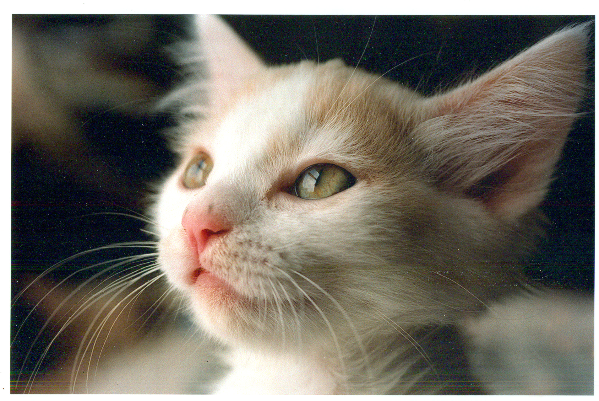

A kitten is a juvenile cat. After being born, kittens are totally dependent on their mother for survival and they do not normally open their eyes until after seven to ten days. A domestic kitten is a highly social animals and usually enjoy human companionship. Most kittens have fur. But some don't. Some cats look like their parents some don't this is because they might have inherited the genes from another part of the family.
